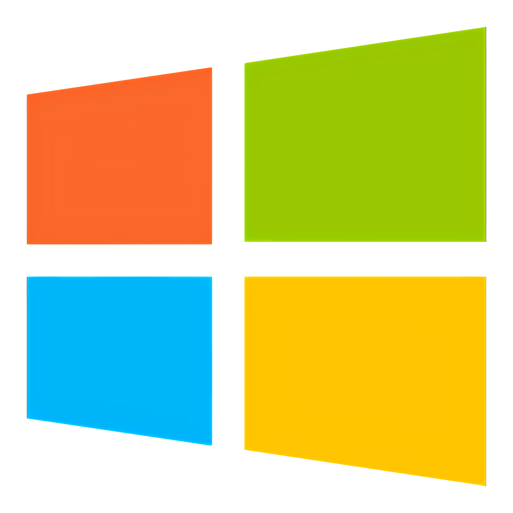
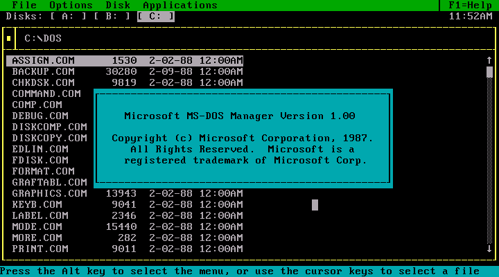

DevJornal
Bill Gates

Bill Gates é uma figura icônica no mundo da tecnologia e dos negócios, conhecido por seu papel fundamental na transformação da indústria da informática. Co-fundador da Microsoft Corporation, Gates ajudou a moldar a era digital, influenciando a maneira como as pessoas interagem com a tecnologia. Nascido em 28 de outubro de 1955, em Seattle, Washington, Gates demonstrou desde cedo uma aptidão notável para a informática e a resolução de problemas. Seu trabalho na Microsoft, iniciado em 1975, revolucionou o software para computadores pessoais e ajudou a popularizar o uso de sistemas operacionais como oWindows.
Além de seu impacto no setor de tecnologia, Gates é amplamente reconhecido por suas contribuições filantrópicas. Em 2000, ele e sua esposa Melinda fundaram a Bill & Melinda Gates Foundation, uma das maiores e mais influentes fundações filantrópicas do mundo, dedicada a combater doenças, promover a educação e reduzir a pobreza global. A combinação de sua visão inovadora e seu compromisso com a responsabilidade social faz de Gates uma figura de relevância contínua e complexa, cuja vida e carreira oferecem uma rica fonte de estudo e inspiração.
Esta bibliografia visa explorar as principais obras e fontes que documentam a vida, o trabalho e as realizações de Bill Gates, fornecendo um panorama abrangente sobre sua trajetória profissional e suas contribuições para a sociedade. Através de uma análise de livros, artigos e biografias, esta bibliografia oferece um recurso valioso para entender a magnitude de seu impacto e as diversas facetas de sua influência no mundo moderno.
Microsoft


A Microsoft, fundada por Bill Gates e Paul Allen em 4 de abril de 1975, começou com o desenvolvimento do Altair BASIC, um software para o computador Altair 8800. A empresa rapidamente se destacou no mercado de sistemas operacionais com o lançamento do MS-DOS em 1981, que dominou os PCs da época. Este sucesso inicial foi seguido pelo lançamento do Windows 1.0 em 1985, que marcou o início de uma longa série de sistemas operacionais que definiriam a indústria. Versões posteriores, como o Windows 95 e o Windows XP, foram particularmente influentes, introduzindo novas funcionalidades e interfaces que moldaram a experiência do usuário em computadores pessoais.
O Microsoft Office, lançado em 1989, consolidou a posição da empresa como líder em software de produtividade. Com seus componentes principais, como Word, Excel e PowerPoint, o Office tornou-se a suíte de aplicativos padrão para empresas e usuários individuais em todo o mundo. A Microsoft também se destacou em outras áreas de software, incluindo o Visual Studio, uma ferramenta crucial para desenvolvedores, e o Azure, uma plataforma de computação em nuvem que se tornou um dos principais concorrentes no mercado de serviços em nuvem.

 A expansão da Microsoft foi acelerada por várias aquisições estratégicas, como a compra do LinkedIn em 2016 e do GitHub em 2018. Estas aquisições ajudaram a Microsoft a diversificar suas ofertas e a reforçar sua presença em áreas como redes sociais profissionais e desenvolvimento colaborativo de software. Em 2022, a Microsoft anunciou a intenção de adquirir a Activision Blizzard, expandindo ainda mais sua influência no mercado de jogos.
A expansão da Microsoft foi acelerada por várias aquisições estratégicas, como a compra do LinkedIn em 2016 e do GitHub em 2018. Estas aquisições ajudaram a Microsoft a diversificar suas ofertas e a reforçar sua presença em áreas como redes sociais profissionais e desenvolvimento colaborativo de software. Em 2022, a Microsoft anunciou a intenção de adquirir a Activision Blizzard, expandindo ainda mais sua influência no mercado de jogos.
No entanto, a Microsoft também enfrentou desafios significativos, incluindo processos antitruste nos anos 1990 e início dos anos 2000, que alegavam práticas de mercado desleais. Além disso, a empresa continua a enfrentar intensa concorrência de rivais como Apple, Google e Linux, especialmente em áreas como sistemas operacionais e plataformas de nuvem. Apesar dessas dificuldades, a Microsoft manteve uma posição de destaque na indústria.
Com uma missão de capacitar cada pessoa e organização a alcançar mais, a Microsoft continua a inovar e a se adaptar às novas demandas do mercado. A empresa tem se concentrado em áreas emergentes como inteligência artificial e realidade aumentada, exemplificada pelo HoloLens. Além disso, a Microsoft está comprometida com a sustentabilidade, buscando atingir a neutralidade de carbono e investir em tecnologias que promovam um futuro mais sustentável. A influência global da Microsoft é inegável, moldando o panorama tecnológico e econômico mundial.
XBOX

Filantropia de Bill Gates
Bill Gates é amplamente reconhecido por seu significativo impacto na filantropia global, principalmente através da Bill & Melinda Gates Foundation, que ele fundou em 2000 com sua então esposa, Melinda French Gates. A fundação é uma das maiores e mais influentes organizações filantrópicas do mundo, com um foco abrangente em saúde global, educação e redução da pobreza. Entre as suas iniciativas de destaque, a fundação tem trabalhado intensamente para combater doenças infecciosas como a malária e a poliomielite, investindo em vacinas e tratamentos. Além disso, a fundação promove o acesso a educação de qualidade em países em desenvolvimento e apoia a melhoria das condições de vida para os mais pobres, incluindo programas de desenvolvimento econômico e infraestrutura.
A Bill & Melinda Gates Foundation também se destaca por suas parcerias com outras organizações e governos para maximizar o impacto de seus projetos. A fundação está envolvida em uma série de iniciativas para enfrentar a crise climática, impulsionar inovações agrícolas e melhorar a saúde materna e infantil. A abordagem baseada em evidências e a busca por soluções sustentáveis têm sido características marcantes do trabalho filantrópico de Gates.
Premiações e Honrarias
Bill Gates recebeu numerosos prêmios e honrarias ao longo de sua carreira, refletindo sua influência significativa no setor tecnológico e seu impacto na filantropia. Entre os prêmios mais notáveis está a Medalha Presidencial da Liberdade, concedida em 2005, que é uma das maiores honrarias civis dos Estados Unidos, reconhecendo contribuições notáveis à nação. Em 2005, Gates também foi nomeado Cavaleiro da Ordem do Império Britânico (KBE) pela sua contribuição à filantropia e ao setor de tecnologia.
Além desses, Gates recebeu diversos prêmios ao longo dos anos, incluindo o Prêmio Príncipe de Astúrias de Cooperação Internacional, em 2006, e o Prêmio do fundador do World Economic Forum, em 2014. Essas honrarias reconhecem não apenas suas realizações empresariais e tecnológicas, mas também seu compromisso em usar sua riqueza e influência para promover mudanças positivas no mundo.
A combinação de suas contribuições significativas para a tecnologia e sua dedicação à filantropia consolidam Bill Gates como uma figura de importância global, cuja influência vai além das fronteiras dos negócios e da tecnologia, impactando diretamente as vidas de milhões de pessoas ao redor do mundo.